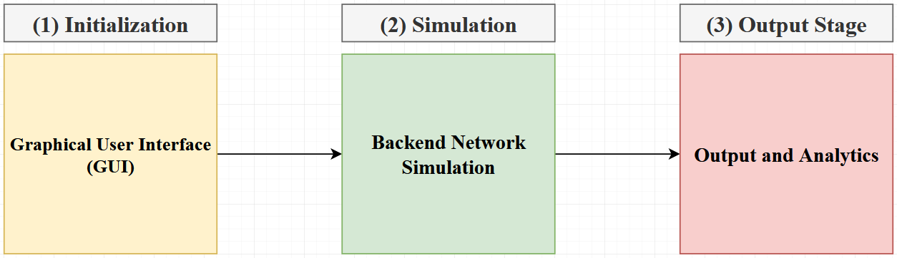
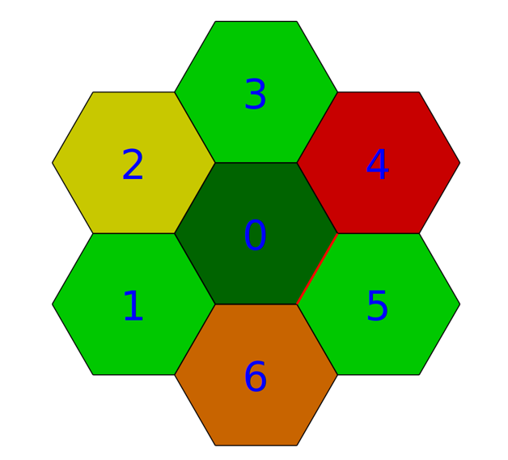
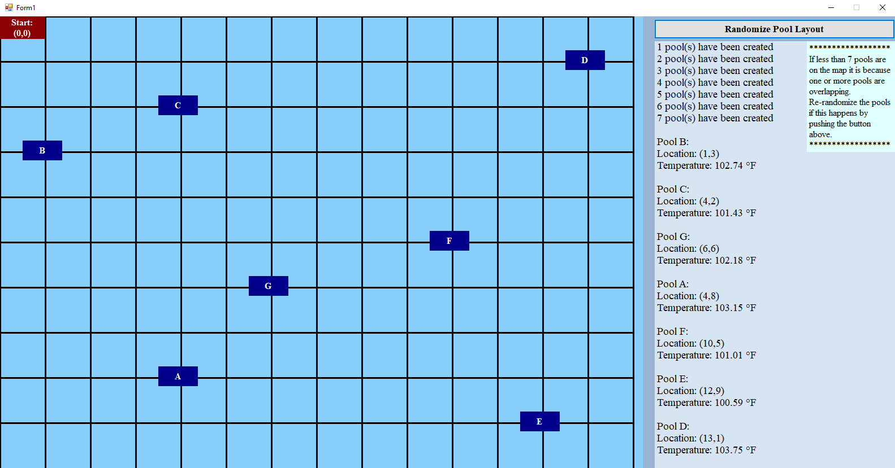

The purpose of this project is to simulate a network comprised of current technologies in order to test various self-healing and network management strategies in the hopes of implementing a digital network manager capable of detecting the “unhealthy/failing” cells present in a network to implement researched self-healing procedures. The simulator will accurately model channel conditions and model downlink communications between cellular towers and User Equipment (cell phones, computers, etc.). The project centers around determining the optimal algorithms implemented at the management level for achieving this result using the constraints introduced by the environment and technologies simulated.
During runtime the project goes through those 3 different stages: the initalization phase, simulation phase, and finally the output phase. The programmed simulator takes in a pre-generatred array of Signal to Noise Ratio values from MATLAB and uses it within the C++ simulator. The entire simulator is programmed in C++, and is composed of an interface programmed in GTK+-3.0 that allows the user to create a network environment, enter network parameters for the simulation, and generate large amounts of CSV sheets that log the performance of the system. A high level architecture diagram shows these phases.
During the initalization phase the user can dynamically create a network structure with cellular towers represented by numbered hexagons by clicking on the edge they would like to instantiate the tower from relative to the already placed towers. The user can also specify the "health" of the tower as 1 of 4 states (Healthy, User Congested, Demand Congested, Failing). The hexagons represent a sample network that was instantiated, and the numbers placed at the center of the hexagons represent the order in which the hexagons were created by the user.

The following conditions are depicted in the image above:
Healthy :
Celluar Towers 0, 1, 3, and 5
User Congested :
Celluar Tower 2
Demand Congested :
Celluar Tower 6
Failing :
Celluar Tower 4
The currently selected hexagon will be a darker shade of the color it is configured to (e.g. cellular tower 0 is a darker green because it
is selected). Additional cellular towers are instantiated by moving the cursor to where you would like to add additional towers, which will
be indicated by a red highlight on the edge of the hexagon the newly added hexagon will be appended to. In the image, cellular tower 0 is
highlighted on the edge where cellular tower 5 is placed, so if cellular tower 5 is not present and the user clicks a new cellular tower
will be appended to that edge.
After creating the cellular tower network the user will be navigated to a page that lets them enter network parameters that will be used to set
up the simulation. The required parameters are split into 3 categories: Network Parameters, Simulation Parameters, and Self-Healing
Parameters.
Network Parameters:
Cellular Tower (BS) side length, Antennas per cellular tower, number of transceiver per antenna, and devices (UE) connected per antenna
Simulation Parameters :
Length of simulation, number of simulations, the simulation starting number, and a field to specify a save name for the simulation output files
Self-Healing Parameters :
Buffer size (used to determine how much data will be analyzed to perform self-healing in real-time)
Once these parameters are configured, clicking the "Run Simulation" button will begin the simulation process. Clicking the "Back" button allows you
to navigate back to the previous page. Note that both windows are responsive and can scale to fit multiple screen sizes.
This project presents the development of a mock control system for an automated, self-sustaining, decentralized water treatment plant called
"DROWT" for short. The system is composed of an Arduino microcontroller MKR1000 and an array of sensors linked to a mobile application
to monitor different aspects of the system. The application lets the end user monitor the entire system and grants access to the control of certain
sensors. The system communicates with cloud based analytic software ThingSpeak to process and display system data on a mobile android application.
For this project I served as the sole developer of the mobile application. The application itself was developed entirely in Java using
Android Studio and standard material design principles.
From left to right (in the image above) the following pages are shown:
HomePage :
This is the central page that appears once the user enters the application. It contains information from the water going to a preselected DROWT system,
including the temperature, flow rate, pressure, conductivity, and water tank specifications (height of container and amount filled). Two buttons are
placed at the bottom to navigate to the "Pump Control" and "System Select" pages.
Pump Control :
Clicking the "Pump Controls" button from the homepage displays the current status of the pump and provides the user the option to turn the pump on or off
remotely instead of having to do this in-person. Future controls are planned, so this page was added later in development to centralize all current and
future controls in one place.
System Select :
Using the "System Select" button on the homepage leads the user to a page that allows them to perform administrator functions within the application. The
user can type in the name of a system on the list and either select that system to display it's information on the other pages or click the "details"
button to view specific information about this system. Additionally, if a user types in the system name and clicks the "delete" button that system
will be removed from the list of systems on the app. If a system needs to be added to the list the user can click the "add" button and fill in the
appropriate information to add the system.
Data set to the application is from our mock system (and vice versa) are sent using the ThingSpeak REST API service, which also logs data points sent
by the mock system.
This recorded data will be used by the Civil and Mechanical Engineering team who we collaborated on this project with. Uses include visualizing the data
and tracking / predicting irregularities within the system in order to make future improvements and optimizations.
Shown here are sample images taken from ThingSpeak that show the tracked temperature and tank fill level vs the date they were recorded.
This project was presented at COMPSAC 2019, a international IEEE Computer Society conference and later published in a peer reviewed journal through IEEE. To see the full publication click here
The purpose of the experiment was to create a frequency and period meter by combining 5
different modules. A display interface was designed to output to the 7-segment display by
multiplexing, which utilizes an effect known as Persistence of Vision (POV) to control all the
displays with 7 pins rather than the 56 that would be required to run all the displays.
Afterwards, a display controller was created to take a 32 bit BCD value and loads
each set of 4 bits (BCD[3:0], BCD[7:4], etc.) into a register and multiplexes the contents of
the 8 registers onto the display by toggling the select bits on the display interface(WADD),
register to load, and the enable (w) using a 3 bit counter. Additionally, a binary to BCD (B2BCD)
module was used to take a 10 bit number that represents either a frequency or period in binary and
convert it to BCD. This is done by using a select to determine which value will be selected and sent
to the display controller, then applying shifts and adding 3 until a comparator is greater than 4.
Once this condition is satisfied the 4 bit BCD numbers are captured and sent as a 32 bit BCD
value to the display controller.
Next a frequency meter was created by creating a module that counts the positive edges of an incoming
signal and incrementing a counter, which is then captured in a register F and sent to the B2BCD module
in order to be displayed. Finally, a period meter was designed by passing the negative edge of the
frequency meter to the period meter in order to synchronize the two modules. The period module then
measures the period by starting the measurement at the a negative edge and incrementing a register "P"
until the next negative edge is detected. The output is a frequency and corresponding period on the
7-segment display on the FPGA.
The following image shows a high level block diagram of what was described above.
The Frequency Meter and Period Meter blocks were connected to
a function generator present in our university labs and a Digital to Analog converter module attached to
our FPGA to generate a desired frequency and period. These values are then passed into the B2BCD
module of the application, which decodes the 10 bit binary value representing the frequency
and period into a 32 bit BCD value. The Display Controller module is used to translate
and pass the value to the Display Interface module, which performs the multiplexing
required to display our processed frequency and period from the connected function generator.
The frequency and period data generated from the function generator in our lab was displayed on both the
7-segment displays on the FPGA and on the function generator itself, which allowed us to verify the values
being displayed on the FPGA.
In "Sample 1" the frequency was set to 1 KHz and by extension the period was set to 990μs. In the image
shown our FPGA displayed "0990" on the left 4 segments and "0001", which is expected.
Additionally, sample 2 was set to 2 KHz and 495μs, which we were also able to verify on the FPGA. This
time the 7-segment displays show "0495" and "0002" just as we expected.
More trials were ran to verify the data displayed, which are included in the full write up with additional
analysis. To view the full report for this project
click here.
The location finder project shown is a C# Windows Form Application that aims to find an optimized path to traverse through a set of coordinates. Assuming there is a pool repair man at the top-left corner (coordinates (0,0)) the program displays the order in which the person should travel to reach all the "pools" with the least amount of distance to get the temperature of the pool. This is done by calculating the nearest direct path from the current destination of the repair man to a next destination.

In the default configuration shown belowthe repair man would have to traverse the pools in the order "B, C, G, A, F, E,
D" to reach the pools in the most efficient way using a "nearest-first" algorithm. The program calculates these values during
runtime, so by clicking the "randomize pool layout" button at the top right corner of the page the location of each pool can
be shuffled and the values will be recalculated and redisplayed. The graphical user interface will update according this this
"reshuffling" and show the pools in the correct locations for accurate visualization. An additional feature associated with this
program is the randomization of the pool temperatures. In conjunction with assigning random locations to the pools a random temperature
is assigned within the bounds of 98 and 104 degrees.
The full source code for this project can be viewed here